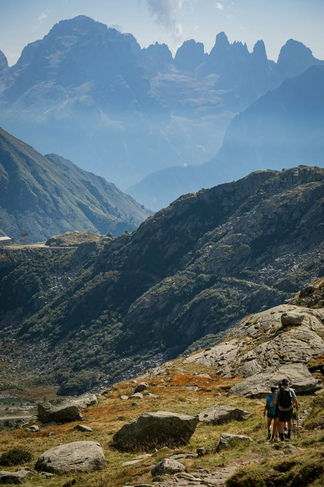
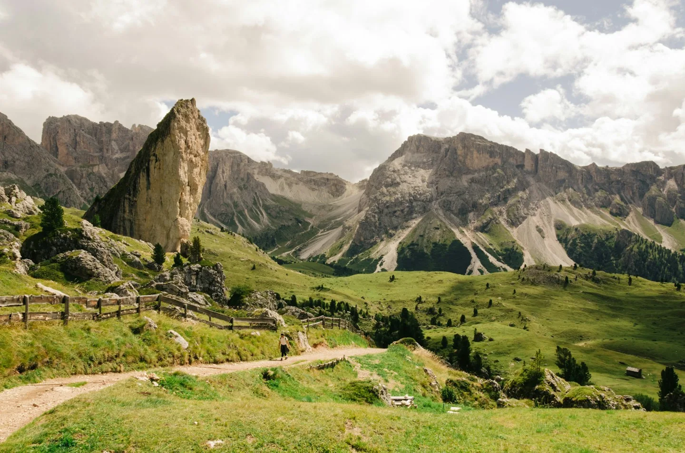

Alpine walking field guide
The long way feels right.
A field guide for planning a day in the mountains. Choose your terrain, then pack for the weather you might get.
Plan a walk
Pick your terrain
Start with the kind of day you want and check local trail conditions before leaving.

Meadow paths
A gentler introduction to alpine walking. Look for marked paths and check seasonal access.
Woodland climbs
Sheltered routes offer shade, but roots and rocks get slippery after rain.
Exposed ridges
Check wind and visibility. Plan a turnaround point before setting out.